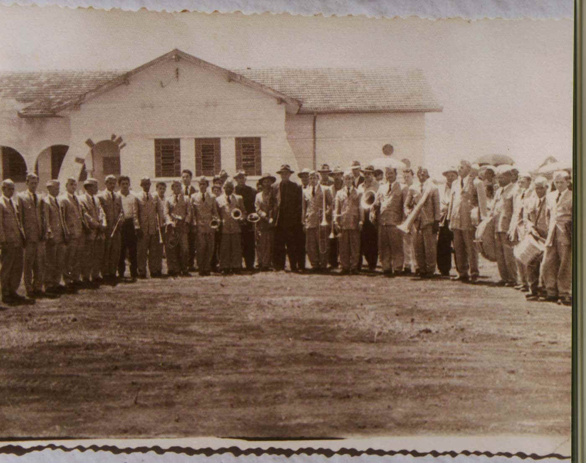

HISTÓRICO


Inauguração da Escola de Trabalhadores Rurais Arlindo Ribeiro
Banda Pérola do Oeste - Maestro Pedro Leoncio de Oliveira
As Escolas de Trabalhadores Rurais de nosso estado foram instituídas em 1935, sendo regulamentadas pelo decreto número 7.782, de 03 de dezembro de 1938, no governo do inolvidável interventor Manoel Ribas quem, nesta oportunidade, consideramos como
O Colégio Agrícola Estadual Arlindo Ribeiro, foi criado pelo governador Bento Munhoz da Rocha Neto, em 12 de julho de 1953 e inaugurado em 29 de dezembro de 1954, como Escola de Trabalhadores Rurais, com o curso primário e parte elementar de noções rurais.
Em 1960 evolui a categoria de Escola Agrícola de nível médio, passou a curso ginasial, tendo a primeira série ginasial no ano letivo de 1963, sendo denominada como Ginásio Agrícola Arlindo Ribeiro.
Em 1969 passou afuncionar como COLÉGIO AGRÍCOLA ESTADUAL ARLINDO RIBEIRO, tendo no mesmo ano a sua 1ª série colegial.
O COLÉGIO AGRÍCOLA ESTADUAL ARLINDO RIBEIRO conta hoje com:
Envolvendo de modo geral a nossa comunidade e regiões vizinhas através de nossos alunos.